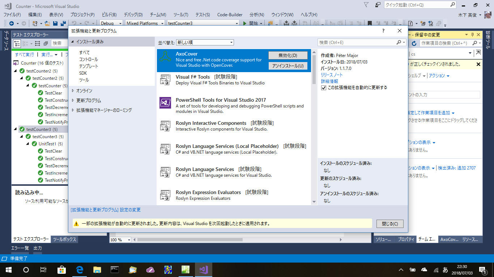
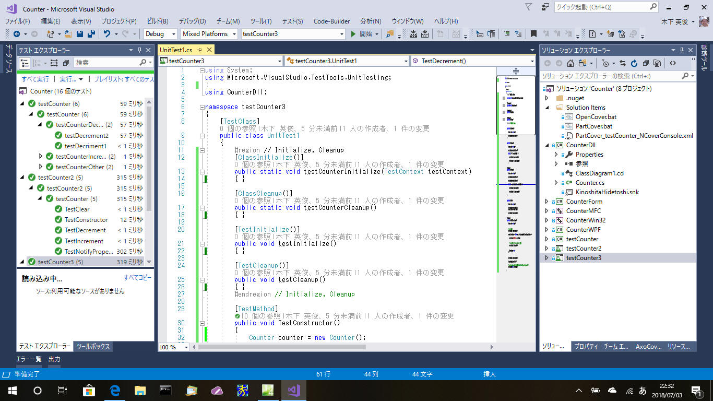
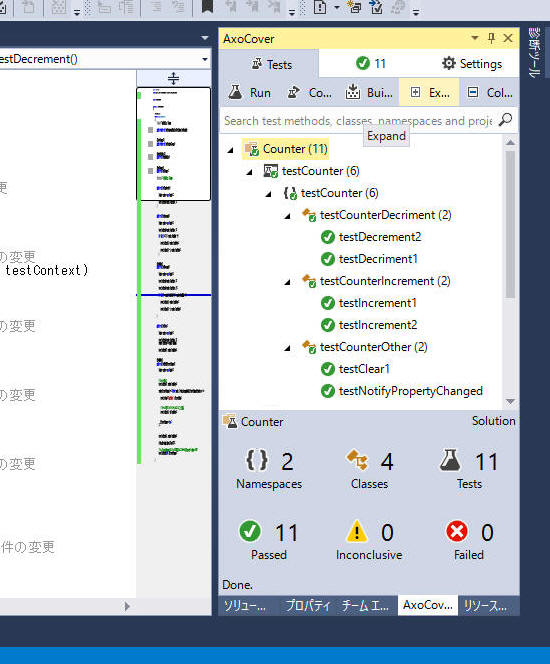
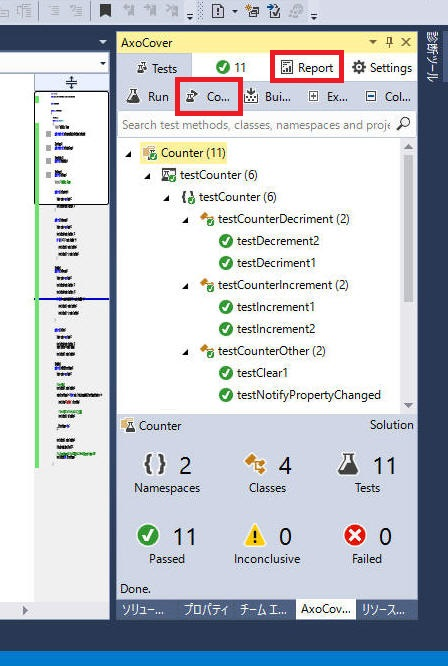
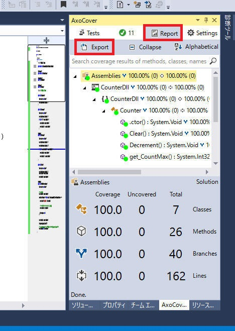
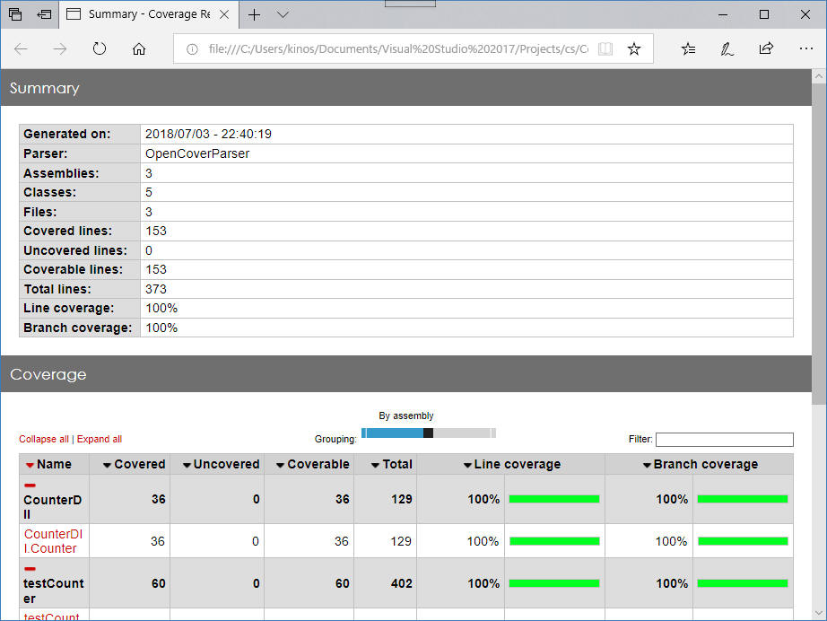
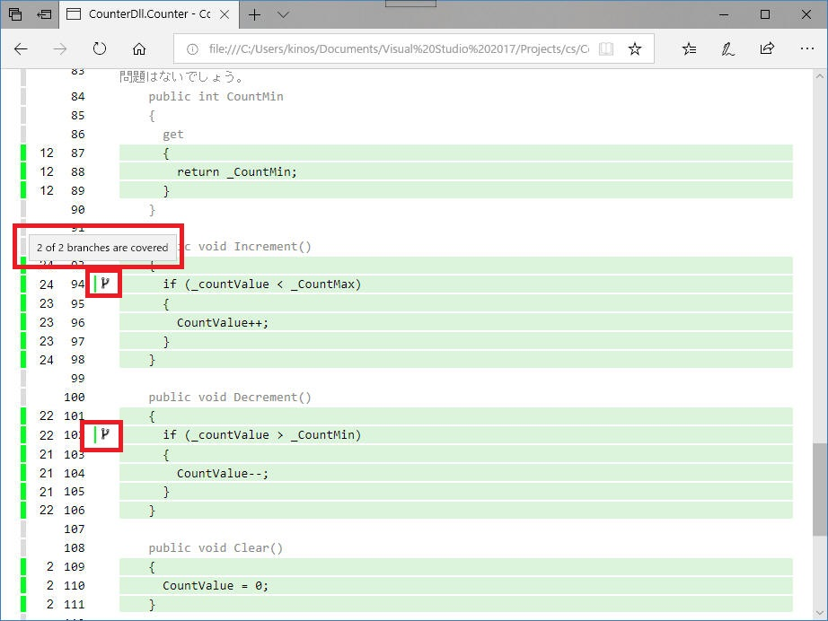

.NETフレームワーク向けのフリーのソースコードカバレッジツールである AxoCover について説明します。
無償ツールながらGUI統合されていて、分岐網羅（C1）のカバレッジが取得できます。
Features: 機能概要は以下のような感じです。（AxoCoverのホームページより）
注意
この原稿を記載時点(2020/7/24)、AxoCover は VS2019 に非対応です。VS2012-2017 まで対応のようです。
下記 issues によると VS2019 への対応も調査が進んでいるようです。
https://github.com/axodox/AxoCover/issues/197
Pre-release の扱いですが、下記URLから
AxoCover.vsix を取得してインストールすれば VS2019 でもちゃんと動作しそうです。
https://github.com/axodox/AxoCover/releases/tag/master-1.1.400
[概要]
AxoCover のインストールからざっくりまずは触ってみます。
[環境]
(1) 「拡張機能と更新プログラム」から「AxoCover」をインストール

(2) テストプロジェクトを構築
詳細割愛。
AxoCover の評価の目的から、NCover と MSTest の２つのプロジェクトを作ってみました。
両方ともちゃんと動作しました。

(3) テスト実行
テストを実行してまずは全部をOKにします。
「Test」 → 「Run」 をクリックします。テストの実施結果が画面に表示されます。

(4) Coverage を実行
「Test」 → 「Coverage」 をクリックします。
再コンパイル後に動き出し、全テストを終了後に下図画面になります。
「Report」というタブが登場するのでこれを押下します。

(5) Report
「Report」タブを選択すると下図の画面を表示します。
Coverageの結果が画面上に表示されます。

「Export」 ボタンを押下するとレポートが出力されます。
レポートは HTML です。

レポート内には下図のようなソースコード上の実行カウント数も出力されます。
AxoCover のカバレッジは C1
分岐カバレッジをサポートしており、
下図に示すように C1 分岐のカバー状況も出力されます。

これが無償で提供されるとは、素晴らしいです。
本ページの情報は、特記無い限り下記 MIT ライセンスで提供されます。
|
MIT License Copyright (c) 2018-2022 Kinoshita Hidetoshi Permission is hereby granted, free of charge, to any person obtaining a copy of this software and associated documentation files (the "Software"), to deal in the Software without restriction, including without limitation the rights to use, copy, modify, merge, publish, distribute, sublicense, and/or sell copies of the Software, and to permit persons to whom the Software is furnished to do so, subject to the following conditions: The above copyright notice and this permission notice shall be included in all copies or substantial portions of the Software. THE SOFTWARE IS PROVIDED "AS IS", WITHOUT WARRANTY OF ANY KIND, EXPRESS OR IMPLIED, INCLUDING BUT NOT LIMITED TO THE WARRANTIES OF MERCHANTABILITY, FITNESS FOR A PARTICULAR PURPOSE AND NONINFRINGEMENT. IN NO EVENT SHALL THE AUTHORS OR COPYRIGHT HOLDERS BE LIABLE FOR ANY CLAIM, DAMAGES OR OTHER LIABILITY, WHETHER IN AN ACTION OF CONTRACT, TORT OR OTHERWISE, ARISING FROM, OUT OF OR IN CONNECTION WITH THE SOFTWARE OR THE USE OR OTHER DEALINGS IN THE SOFTWARE. |
| 2022-06-04 | - | デザイン更新 |
| 2020-07-24 | - | 更新（概要、参照） |
| 2018-07-03 | - | 新規作成 |